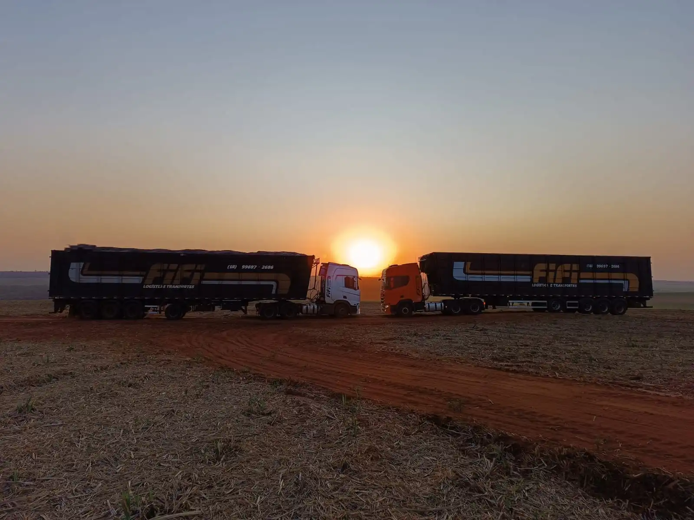
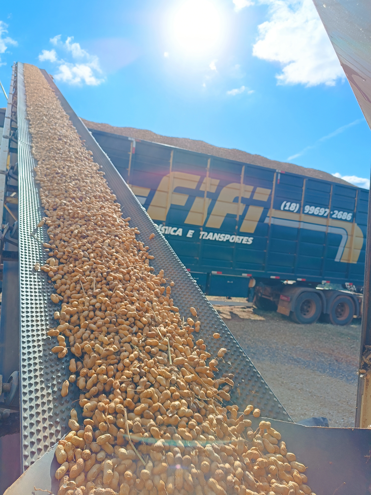

01
Especializados na venda e transporte de biomassas
Matriz Estratégica em Alvares Machado – SP.
Geramos confiança, construímos histórias e impulsionamos o agro do nosso país.
Conheça nossos serviçosSobre nós
Parceiros Sólidos no Agro
98,6%
de taxa de entrega no prazo.
+25mil
toneladas de insumos entregues por mês.
+500
descargas no mês.
24/7
Toda frota com apoio e rastreio
Clientes e parceiros
Logística que se Encaixa nas Suas Necessidades
Parceiros Sólidos no Agro
02
Caminhões adaptados
03
Transporte de silagem
04
Transporte de Amendoim
05
Transporte de esterco, grãos e outros
Parceiros Estratégicos para o Crescimento
Setores Críticos que Confiamos no Brasil.

Bagaço de cana
O bagaço de cana pode ser utilizado na alimentação de bovinos como uma fonte de fibra de baixo valor nutritivo, especialmente na seca, sendo crucial complementar a dieta com concentrados para fornecer os nutrientes necessários. Na indústria, ele serve como matéria-prima para a fabricação de papel, papelão, aglomerados e biomassa.
Silagem
A silagem para gado é uma técnica de conservação de forragem, como capim ou milho, através de um processo de fermentação controlada para garantir o fornecimento de alimento nutritivo, especialmente durante períodos de seca. Essa técnica permite armazenar o alimento por longos períodos com perdas nutricionais mínimas, servindo como uma alternativa ao pasto ou como complemento nutricional, o que é crucial para o manejo e desempenho de rebanhos em confinamento.
Casca de amendoim
A casca de amendoim pode ser utilizada como fonte de fibra e volumoso na dieta do gado, sendo uma opção econômica e sustentável. Ela deve ser fornecida como complemento e não como alimento único, sendo importante balancear a dieta com outros ingredientes para garantir a ingestão adequada de nutrientes e evitar problemas como o excesso de tanino, que pode ser prejudicial.
Esterco para compostagem
O esterco é um excelente material para compostagem, pois fornece nutrientes para as plantas e melhora o solo quando bem processado. Para compostar, intercale camadas de esterco (de animais como galinha, cavalo, boi, porco) com outros resíduos orgânicos, como restos de vegetais e alimentos, e mantenha a pilha úmida na proporção ideal de 40-60%. Evite usar fezes de animais domésticos como cachorros.
Transporte de amendoim
O transporte de amendoim envolve tanto o transporte terrestre, como o uso de carretas e bi-trens, quanto o transporte marítimo para exportação, que é ideal para grandes volumes. É fundamental manter o amendoim seco e limpo para evitar contaminações por aflatoxinas, além de monitorar a umidade e a temperatura durante todo o processo logístico, desde o campo até o destino final.